A flat entrance isn't a small version of a house entryway, it's a different problem entirely.
No coat closet, often no natural light, and usually just a few square feet between the front door and the rest of the apartment.
Decorating it like a bigger entryway, console table and all, usually just makes it feel more cramped. The better approach works through function first and style last.

Mistakes to Avoid
Buying furniture sized for a bigger entryway is the most common mistake, measure twice before any purchase in a space this tight.
Skipping lighting because there's "not much room for a fixture" leaves an otherwise well-organized entrance feeling dim and uninviting.
Starting with decor instead of function is how a small entrance ends up cluttered within the first month.
Keeping It Looking Sharp
A quick daily reset, shoes back on the rack, mail cleared from the tray, keeps a small entrance from sliding into clutter within days.
Wiping down flooring and hardware regularly matters more here than in a larger entryway, simply because everything gets touched and walked on more often per square foot.
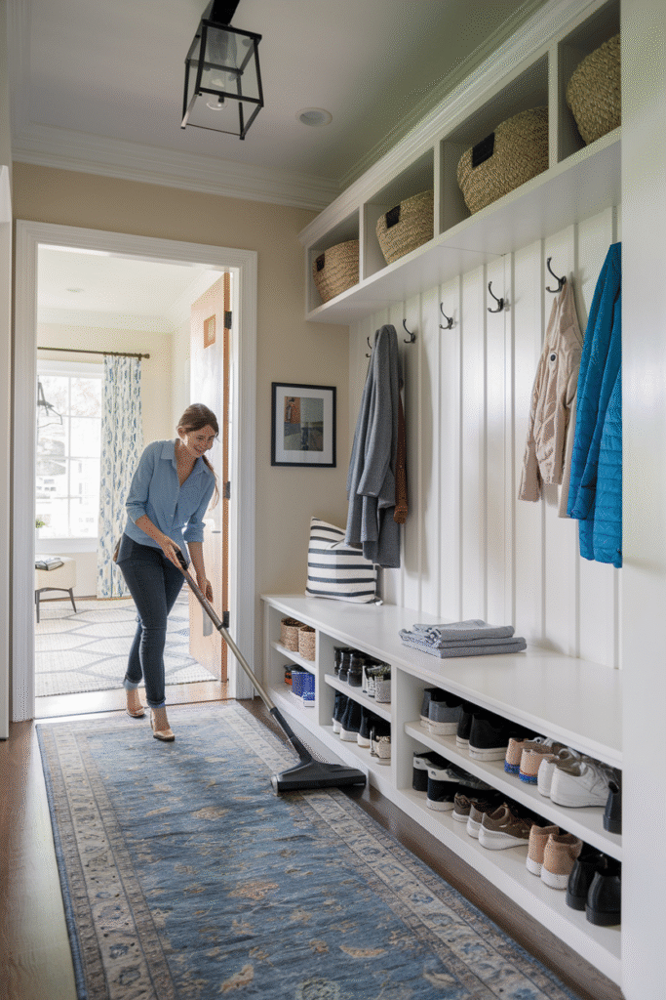
The System, Step by Step
Make It Look Effortless
The best small entrances look like they came together naturally, even though every inch was actually considered.
Keeping surfaces mostly clear, with just one or two intentional objects visible at a time, reads as effortless rather than empty.
This is the payoff of doing the earlier function-first steps properly.
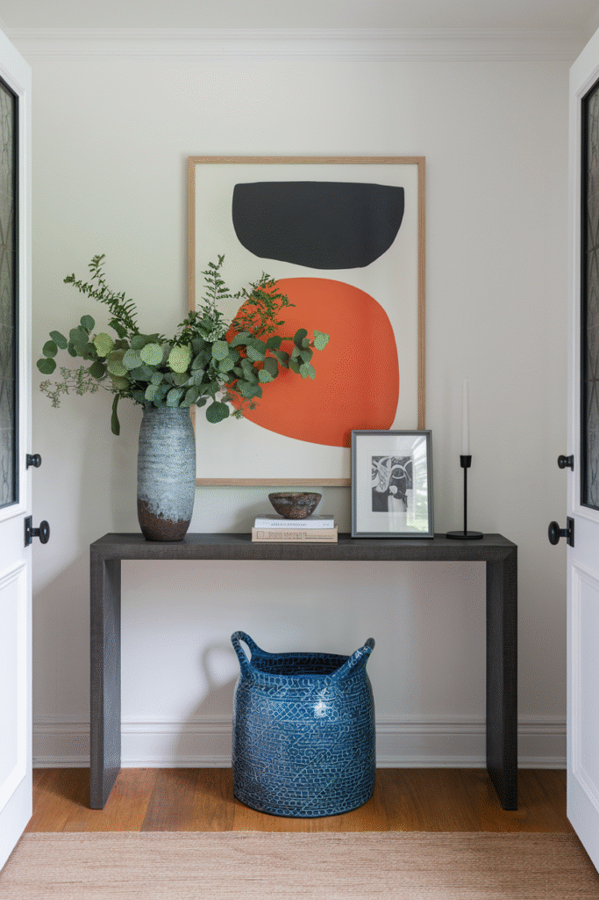
Layer in Texture
A woven mat, a textured hook rack, or a nubby throw pillow on a bench adds depth that flat surfaces and hard materials can't provide alone.
This matters more in a small, often low-light entrance, where texture does real work to keep the space from feeling flat or sterile.
A little texture goes a long way in a space this size.
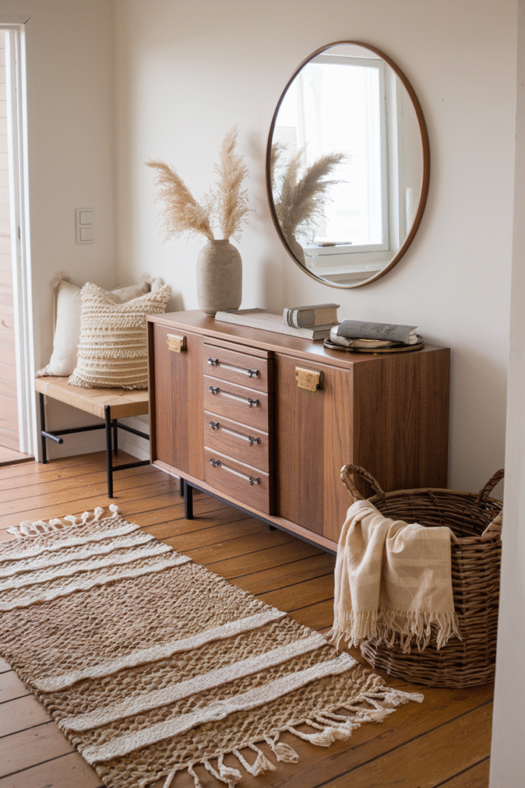
Stay Functional Without Losing Style
A fully styled entrance that doesn't actually hold shoes, keys, and mail will fail within a week of real use.
Checking that every styled element still does its job, the tray still catches keys, the hook still holds a bag, keeps the space from drifting into pure decoration.
Function and style aren't in competition here; the best version of this space does both at once.
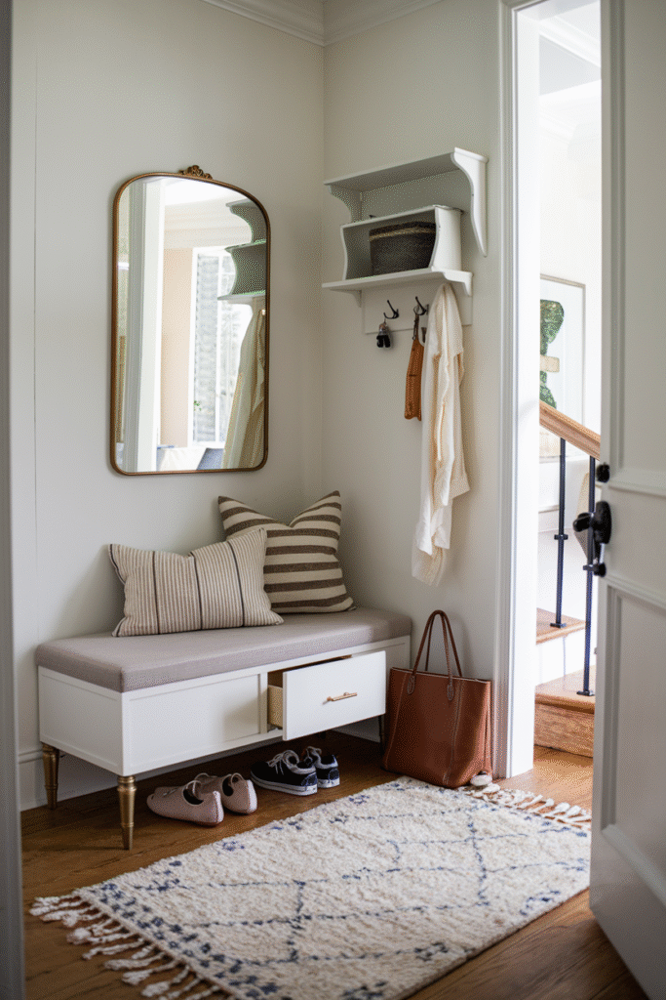
Accessorize With Restraint
A small tray for keys, one hook for a bag, a single plant, a few well-chosen accessories finish the space without crowding it.
Every accessory added here should justify the space it takes, more so than in any other room of the home.
This is where "less is more" actually means something practical, not just a style preference.
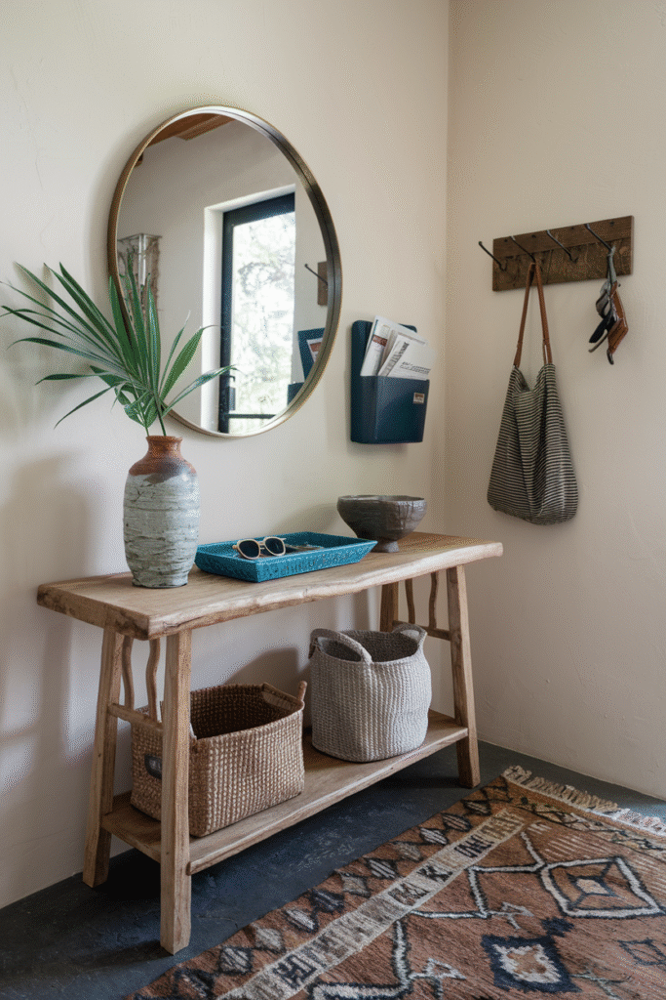
Let Smart Tech Do Some of the Work
A smart lock, a motion-sensor light, or a small smart speaker for quick reminders all add convenience without taking up any physical space at all.
This matters more in a flat entrance than a larger one, since there's no room to spare for anything that isn't either storage or genuinely useful tech.
Not a requirement, but a real option for anyone who wants function without adding more objects.
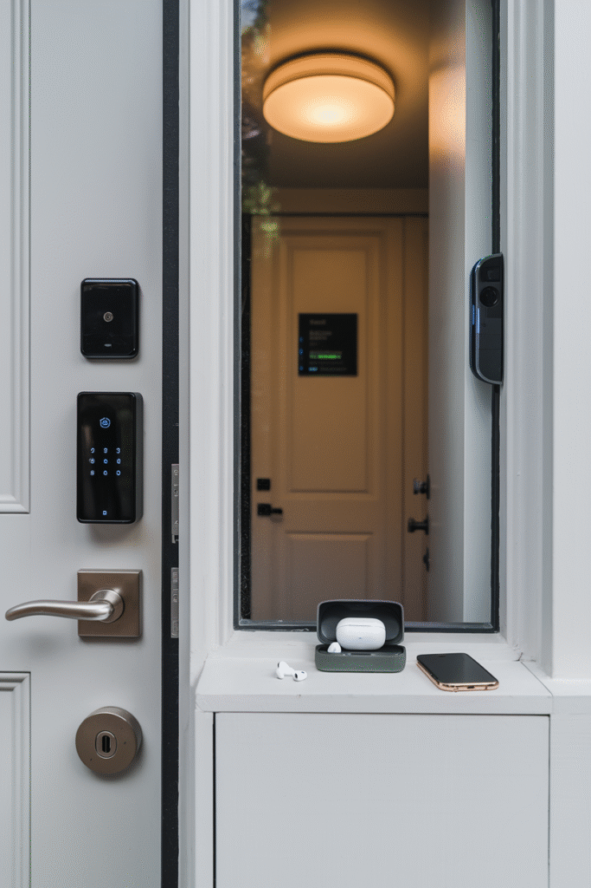
Furniture Should Earn Its Square Footage
A slim bench with storage underneath, or a narrow wall-mounted shelf, does more per square foot than a full console table ever could in this amount of space.
Multi-purpose furniture is the rule here, not a nice-to-have, anything that only does one job is a harder sell in a flat entrance.
Less furniture, chosen more carefully, consistently outperforms more furniture chosen quickly.
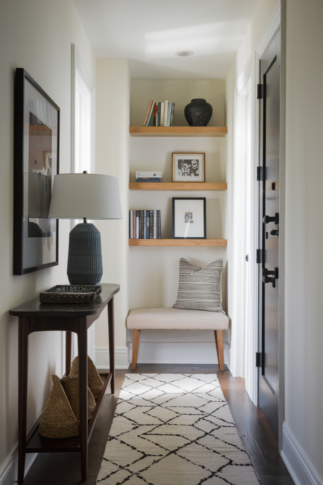
Add Personality Last, Not First
Once function, storage, lighting, and flooring are settled, a single piece of art, a small mirror, or a textured object adds personality without crowding the space.
One considered piece works better here than several competing for the same few square feet.
This is the step most people want to start with, which is exactly why it causes the most clutter when it comes first.
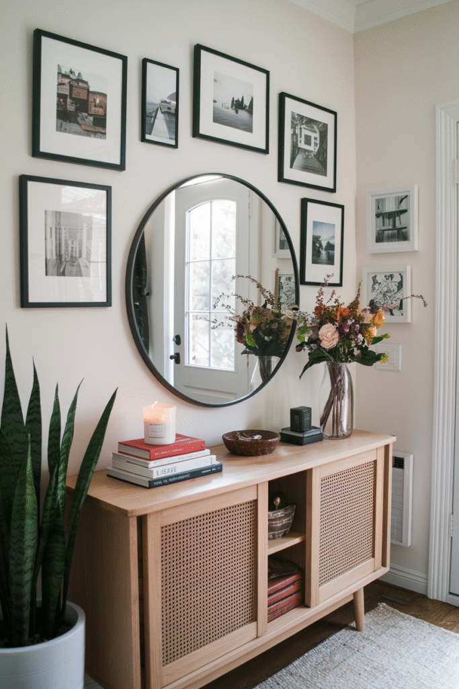
Pick Flooring That Can Take Daily Abuse
This spot takes more daily foot traffic, dirt, and moisture than almost anywhere else in the home.
A durable runner or washable mat protects whatever flooring is underneath and gives the space a defined, styled edge at the same time.
Function matters more here than anywhere else on this list, this isn't the place to prioritize a delicate material.
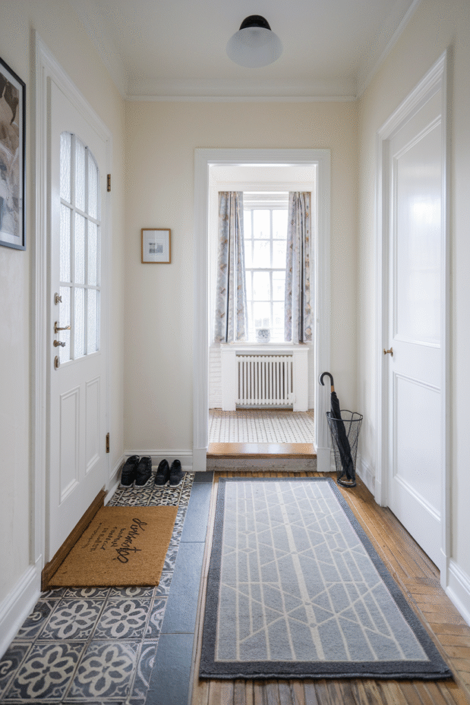
Choose a Palette That Expands the Space
Light, warm neutrals read as more spacious in a tight entrance than a dark or saturated color would.
A single accent, a painted door, a bold runner, still works, as long as the surrounding palette stays light enough to keep the space from feeling boxed in.
This decision affects how big the whole entrance feels more than almost any furniture choice would.
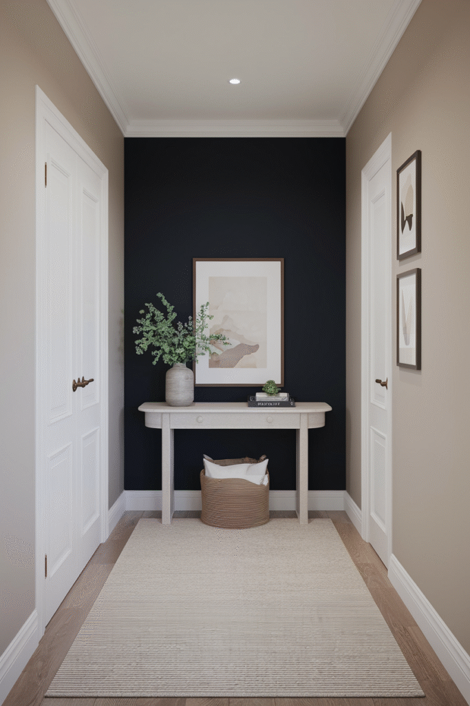
Light It So It Doesn't Feel Like a Cave
Many flat entrances have no window at all, which makes lighting do more work here than in almost any other room.
A warm wall sconce or a plug-in pendant adds real light without needing an electrician, in a spot where overhead fixtures are often missing entirely.
Skipping this step is the fastest way to make even a well-organized entrance feel dim and uninviting.
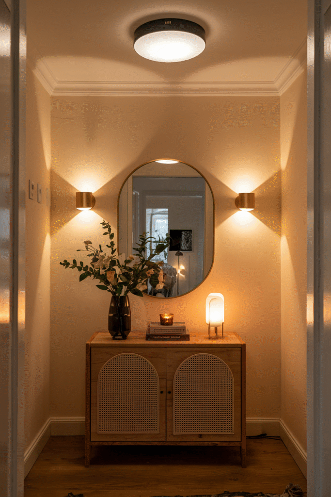
Solve Storage Vertically
A flat entrance rarely has room for a floor-standing cabinet, which means storage has to go up the wall instead of across the floor.
Wall-mounted hooks, a slim floating shelf, or an over-the-door organizer all add real storage without eating into the already-tight floor space.
This is the single biggest sanity-saver on this entire list for anyone dealing with a true no-closet entrance.
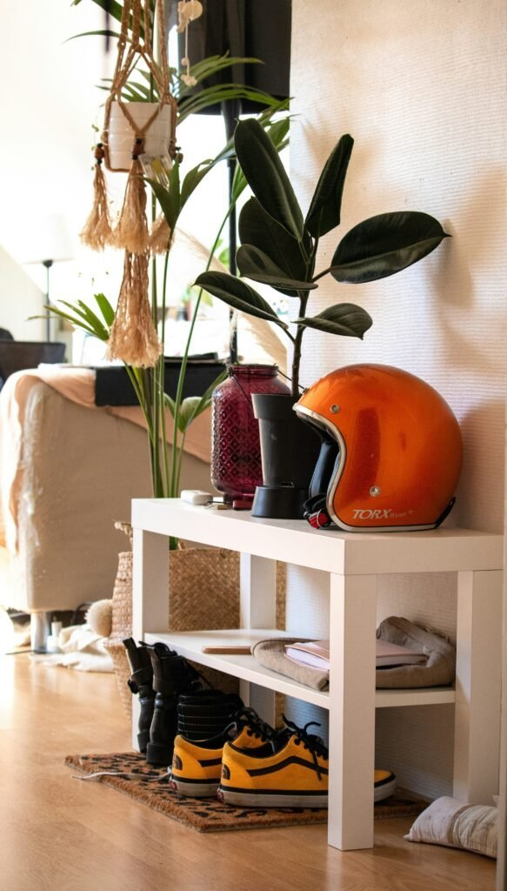
Define the Function First
Before any decor decision, the entrance needs a clear job: where do shoes go, where do keys land, where does the mail pile up.
In a space this small, skipping this step means every surface becomes a catch-all instead of a system.
This single decision shapes every other choice that follows.
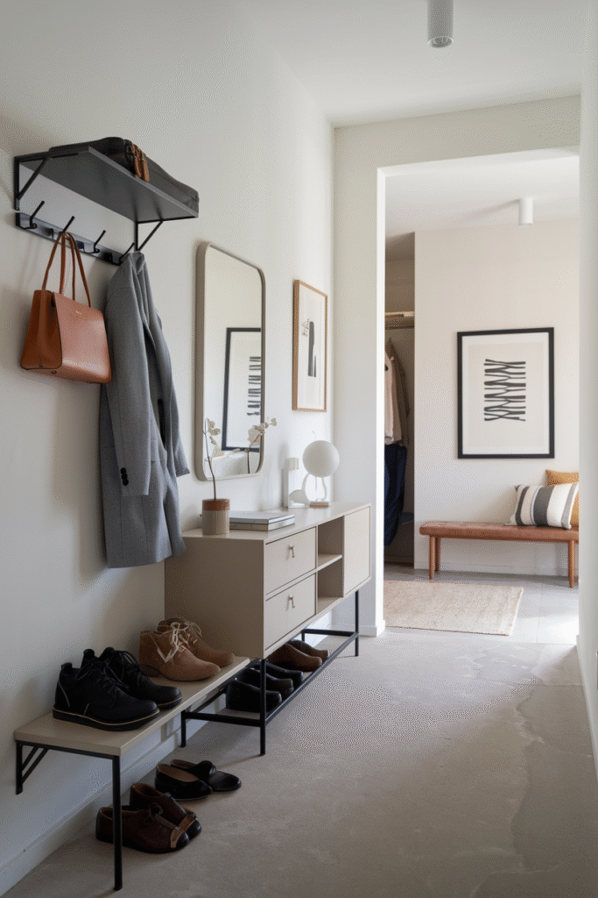
Why a Flat Entrance Actually Matters
This few square feet sets the tone for the entire apartment, since it's the first and last thing anyone sees on the way in or out.
It's also the hardest-working spot in a small home, shoes, keys, mail, and bags all pass through it daily, whether or not it's been designed to handle that.
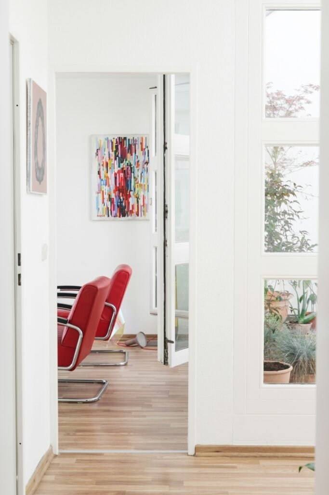
Your Flat Entrance, Your System
None of these steps need to happen in a single weekend.
The actual order that works in real life runs function first: define the job the entrance needs to do, solve storage vertically, then light the space properly. From there, choose a palette and flooring that can take daily abuse, and only then layer in personality, furniture, smart tech, and accessories.
Start with function and storage, since those solve the daily friction points, then layer in lighting, palette, and personality once the basics are genuinely handled.
A small entrance that actually works earns its keep every single day, that's worth more than one that just looks good in a photo.